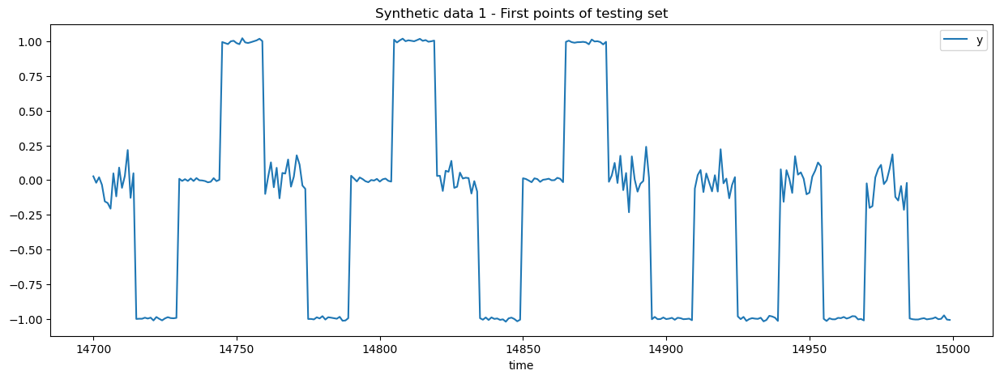
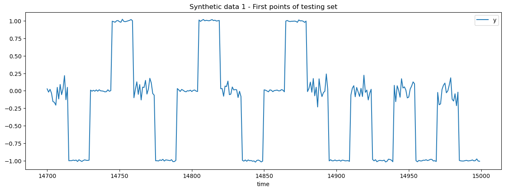

Direct vs Recursive Forecasting#
The purpose of this notebook is to compare the performance of direct
forecasting and recursive forecasting using the MLForecast library. Direct
forecasting means that we train a family of model to predict the target value
at various horizons in the future, e.g. 1 hour, 2 hours, …, 24 hours ahead.
Recursive forecasting (also known as auto-regressive forecasting) means that
we train a single model to predict the target value at the next time step,
and then use the model recursively to predict the next time step using the
previous predictions as input features. Implementing recursive forecasting is
a bit cumbersome to do manually, hence we use the MLForecast library to
handle this for us.
The objective is to show that recursive forecasting can be more efficient in terms of memory usage and training time. However, it can also lead to a loss of accuracy because recursive calls are fed with previous predictions that do not necessarily match the training distribution of the model, and can therefore lead to degenerate predictions, in particular when the variance of the lagged values is informative.
We highlight this issue with a synthetic dataset that has two types of segments:
Segment type “a” has a prefix centered around 0 with low variance and a suffix centered around 1.
Segment type “b” has a prefix centered around 0 with high variance and a suffix centered around -1.
Segment of type “a” and “b” are independently sampled, meaning that is not possible to forecast beyond the length of the segments. However, it should be quite easy to predict the end of a segment given the prefix of the segment with lagged feature engineering.
from time import perf_counter
import numpy as np
import matplotlib.pyplot as plt
import pandas as pd
import tzdata # noqa: F401
SEGMENT_LENGTH = 30
def generate_synthetic_1(
segment_length=SEGMENT_LENGTH,
n_segments=100,
low_noise_level=0.01,
high_noise_level=0.1,
seed=None,
):
"""Generate synthetic time series data with two types of segments
- segment type "a" has a prefix centered around 0 and a suffix centered
around 1.
- segment type "b" has a prefix centered around 0 with high variance and a
suffix centered around -1.
The variance of the prefix is therefore predictive of the suffix.
The suffix values predictive of the next segment prefix's mean (always 0).
"""
rng = np.random.default_rng(seed)
total_length = segment_length * n_segments
segment_types = rng.choice(["a", "b"], n_segments)
prefix_length = segment_length // 2
suffix_length = segment_length - prefix_length
segments = []
for segment_type in segment_types:
if segment_type == "a":
# Prefix is centered around 0 with low variance
segments.append(
rng.normal(loc=0, scale=low_noise_level, size=prefix_length)
)
# Suffix is centered around 1 with low variance
segments.append(
rng.normal(loc=1, scale=low_noise_level, size=suffix_length)
)
elif segment_type == "b":
# Prefix is also centered around 0 but with high variance
segments.append(
rng.normal(loc=0, scale=high_noise_level, size=prefix_length)
)
# Suffix is centered around -1 with low variance
segments.append(
rng.normal(loc=-1, scale=low_noise_level, size=suffix_length)
)
return pd.DataFrame(
{
"time": np.arange(total_length),
"y": np.concatenate(segments),
"series_id": np.zeros(total_length, dtype=np.int32),
}
)
data = generate_synthetic_1(n_segments=500, seed=1)
cutoff = -SEGMENT_LENGTH * 10 # 10 segments for testing
data_train = data.iloc[:cutoff]
data_test = data.iloc[cutoff:]
_ = data_train.plot(x="time", y="y", title="Synthetic data 1", figsize=(15, 5))
_ = data_train.iloc[: SEGMENT_LENGTH * 10].plot(
x="time",
y="y",
title="Synthetic data 1 - First points of training set",
figsize=(15, 5),
)
_ = data_test.iloc[: SEGMENT_LENGTH * 10].plot(
x="time",
y="y",
title="Synthetic data 1 - First points of testing set",
figsize=(15, 5),
)
 

from mlforecast import MLForecast
from sklearn.pipeline import make_pipeline
from sklearn.preprocessing import SplineTransformer, PolynomialFeatures
from sklearn.kernel_approximation import Nystroem
from mlforecast.lag_transforms import (
RollingMax,
RollingMin,
RollingMean,
RollingStd,
)
from mlforecast.target_transforms import Differences
from sklearn.linear_model import Ridge
from sklearn.ensemble import RandomForestRegressor, HistGradientBoostingRegressor
from sklearn.feature_selection import SelectKBest
from sklearn.tree import DecisionTreeRegressor
import warnings
import threadpoolctl
# Workaround a performance problem with HistGradientBoostingRegressor on small datasets.
threadpoolctl.threadpool_limits(limits=1, user_api="openmp")
warnings.filterwarnings("ignore", category=RuntimeWarning, module="sklearn")
# MLForecast can train multiple models in parallel, each model can be a
# pipeline of transformers and a regressor. However we focus on a single
# HistGradientBoostingRegressor model to make sure that this notebook runs
# quickly enough. Feel free to uncomment the other models to compare their
# performance if you have enough time and memory available.
#
# Spoiler alert: the HistGradientBoostingRegressor model is the most accurate.
mlf = MLForecast(
models=[
# make_pipeline(
# SplineTransformer(sparse_output=True, n_knots=10),
# PolynomialFeatures(degree=2, include_bias=False, interaction_only=True),
# # Nystroem(kernel="poly", n_components=200, degree=2, random_state=0),
# SelectKBest(k=100),
# Ridge(alpha=1e-6),
# ),
# RandomForestRegressor(
# n_estimators=100,
# max_features=0.8,
# max_depth=8,
# min_samples_leaf=300,
# n_jobs=4,
# ),
# DecisionTreeRegressor(max_depth=8, min_samples_leaf=300),
HistGradientBoostingRegressor(),
],
freq=1,
lags=range(1, SEGMENT_LENGTH + 1),
lag_transforms={
1: [
RollingMean(SEGMENT_LENGTH // 2),
RollingStd(SEGMENT_LENGTH // 2),
],
SEGMENT_LENGTH
// 2: [
RollingMax(SEGMENT_LENGTH // 2),
RollingMin(SEGMENT_LENGTH // 2),
],
},
# target_transforms=[Differences([1])],
num_threads=4,
)
schema = dict(
time_col="time",
id_col="series_id",
target_col="y",
)
mlf.preprocess(data_train, **schema)
| time | y | series_id | lag1 | lag2 | lag3 | lag4 | lag5 | lag6 | lag7 | ... | lag25 | lag26 | lag27 | lag28 | lag29 | lag30 | rolling_mean_lag1_window_size15 | rolling_std_lag1_window_size15 | rolling_max_lag15_window_size15 | rolling_min_lag15_window_size15 | |
|---|---|---|---|---|---|---|---|---|---|---|---|---|---|---|---|---|---|---|---|---|---|
| 30 | 30 | 0.086113 | 0 | 0.992702 | 0.993013 | 1.031000 | 0.975424 | 1.003332 | 0.993741 | 0.990852 | ... | -0.000597 | -0.003396 | 0.003249 | -0.003548 | 0.006188 | -0.015397 | 0.996924 | 0.013039 | 1.006198 | -0.008697 |
| 31 | 31 | -0.003983 | 0 | 0.086113 | 0.992702 | 0.993013 | 1.031000 | 0.975424 | 1.003332 | 0.993741 | ... | 0.002458 | -0.000597 | -0.003396 | 0.003249 | -0.003548 | 0.006188 | 0.935585 | 0.235347 | 1.006198 | -0.008697 |
| 32 | 32 | -0.177943 | 0 | -0.003983 | 0.086113 | 0.992702 | 0.993013 | 1.031000 | 0.975424 | 1.003332 | ... | -0.007467 | 0.002458 | -0.000597 | -0.003396 | 0.003249 | -0.003548 | 0.869826 | 0.337127 | 1.006198 | -0.008697 |
| 33 | 33 | 0.062693 | 0 | -0.177943 | -0.003983 | 0.086113 | 0.992702 | 0.993013 | 1.031000 | 0.975424 | ... | 0.006787 | -0.007467 | 0.002458 | -0.000597 | -0.003396 | 0.003249 | 0.791984 | 0.429595 | 1.006198 | -0.008697 |
| 34 | 34 | 0.085538 | 0 | 0.062693 | -0.177943 | -0.003983 | 0.086113 | 0.992702 | 0.993013 | 1.031000 | ... | -0.004699 | 0.006787 | -0.007467 | 0.002458 | -0.000597 | -0.003396 | 0.729470 | 0.463953 | 1.006198 | -0.008697 |
| ... | ... | ... | ... | ... | ... | ... | ... | ... | ... | ... | ... | ... | ... | ... | ... | ... | ... | ... | ... | ... | ... |
| 14695 | 14695 | 1.010180 | 0 | 1.000320 | 1.014936 | 1.003430 | 0.991600 | 0.998221 | 0.992632 | 0.989077 | ... | 0.008091 | 0.999022 | 0.989610 | 1.017450 | 0.986895 | 1.000529 | 0.664467 | 0.489913 | 1.017450 | -0.017102 |
| 14696 | 14696 | 1.019595 | 0 | 1.010180 | 1.000320 | 1.014936 | 1.003430 | 0.991600 | 0.998221 | 0.992632 | ... | 0.010742 | 0.008091 | 0.999022 | 0.989610 | 1.017450 | 0.986895 | 0.731740 | 0.460728 | 1.017450 | -0.017102 |
| 14697 | 14697 | 1.014361 | 0 | 1.019595 | 1.010180 | 1.000320 | 1.014936 | 1.003430 | 0.991600 | 0.998221 | ... | 0.012473 | 0.010742 | 0.008091 | 0.999022 | 0.989610 | 1.017450 | 0.800022 | 0.417685 | 0.999022 | -0.017102 |
| 14698 | 14698 | 0.987593 | 0 | 1.014361 | 1.019595 | 1.010180 | 1.000320 | 1.014936 | 1.003430 | 0.991600 | ... | -0.006401 | 0.012473 | 0.010742 | 0.008091 | 0.999022 | 0.989610 | 0.867881 | 0.355933 | 0.999022 | -0.017102 |
| 14699 | 14699 | 1.002173 | 0 | 0.987593 | 1.014361 | 1.019595 | 1.010180 | 1.000320 | 1.014936 | 1.003430 | ... | -0.001378 | -0.006401 | 0.012473 | 0.010742 | 0.008091 | 0.999022 | 0.934417 | 0.260507 | 0.012473 | -0.017102 |
14670 rows × 37 columns
Recursive or auto-regressive forecasting#
tic = perf_counter()
mlf.fit(data_train, **schema) # recursive forecasting by default in mlforecast
print(f"Recursive forecasting training time: {perf_counter() - tic:.1f} seconds")
Recursive forecasting training time: 0.3 seconds
PREDICTION_HORIZON = SEGMENT_LENGTH * 2
def collect_predictions(mlf, data_test, test_offset=0):
"""Collect predictions from the MLForecast object."""
all_predictions = []
UPDATE_CHUNK_SIZE = 5
while test_offset < len(data_test):
new_predictions = mlf.predict(PREDICTION_HORIZON)
new_predictions["horizon"] = np.arange(new_predictions.shape[0]) + 1
new_predictions = new_predictions.merge(
data_test, on=["time", "series_id"], how="left"
)
all_predictions.append(new_predictions)
# Update the forecaster with the new observations
mlf.update(data_test.iloc[test_offset : test_offset + UPDATE_CHUNK_SIZE])
test_offset += UPDATE_CHUNK_SIZE
return all_predictions
tic = perf_counter()
all_recursive_predictions = collect_predictions(mlf, data_test)
print(f"Recursive forecasting prediction time: {perf_counter() - tic:.1f} seconds")
Recursive forecasting prediction time: 26.9 seconds
Direct forecasting#
Let’s pass max_horizon to force modeling for direct forecasting.
tic = perf_counter()
mlf.fit(data_train, max_horizon=PREDICTION_HORIZON, **schema)
print(f"Direct forecasting training time: {perf_counter() - tic:.1f} seconds")
Direct forecasting training time: 18.4 seconds
tic = perf_counter()
all_direct_predictions = collect_predictions(mlf, data_test)
print(f"Direct forecasting prediction time: {perf_counter() - tic:.1f} seconds")
Direct forecasting prediction time: 4.7 seconds
Quantitative comparison#
def score_predictions(all_predictions, model_name):
"""Compute the mean absolute error of the predictions."""
all_predictions = pd.concat(all_predictions)
all_predictions["absolute_error"] = np.abs(
all_predictions["y"] - all_predictions[model_name]
)
return all_predictions.dropna().groupby("horizon")
import matplotlib.pyplot as plt
fig, ax = plt.subplots()
score_predictions(
all_recursive_predictions, "HistGradientBoostingRegressor"
).mean().reset_index().plot(x="horizon", y="absolute_error", label="recursive", ax=ax)
score_predictions(
all_direct_predictions, "HistGradientBoostingRegressor"
).mean().reset_index().plot(x="horizon", y="absolute_error", label="direct ", ax=ax)
_ = ax.set(ylabel="MAE")
Qualitative comparison#
def plot_some_predictions(all_predictions, data_test, model_name, nrows=12, title=None):
fig, axes = plt.subplots(nrows=nrows, figsize=(15, 5 * nrows))
for row_idx, predictions in enumerate(all_predictions):
predictions = predictions.drop("y", axis=1)
merged_data = data_test.copy()
merged_data = merged_data.merge(
predictions, on=["time", "series_id"], how="left"
)
merged_data.drop(["series_id"], axis=1).iloc[: SEGMENT_LENGTH * 3].plot(
x="time", y=["y", model_name], ax=axes[row_idx]
)
axes[row_idx].set_title(title)
axes[row_idx].set_ylim(-1.2, 1.2)
if row_idx >= nrows - 1:
break
plot_some_predictions(
all_recursive_predictions,
data_test,
"HistGradientBoostingRegressor",
title="recursive",
)
plot_some_predictions(
all_direct_predictions, data_test, "HistGradientBoostingRegressor", title="direct"
)